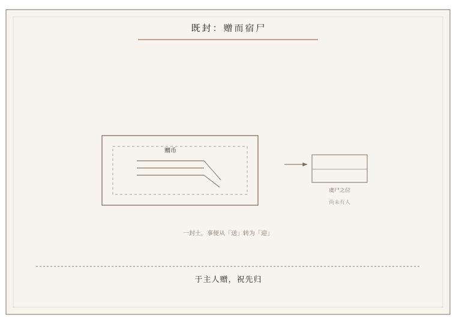

檀弓下 · 四·二十八 · 第 353 课
既封，主人赠，而祝宿虞尸。
说什么事：棺已入土，主人以币赠死者于圹，而祝先回去，宿戒虞祭之尸。
落在哪一层：以「交接」量礼。论「土一盖上，事就从送转为迎」。
为何编在此位：上节论葬之向，此节论葬之末。葬事至此收，虞祭自此起。
【经】既封，主人贈，而祝宿虞尸。
【注】赠以币，送死者於壙也。於主人赠，祝先归。
【疏】「既封」，谓葬已下棺。郑不破「窆」字者，从上可知也。／云「主人赠，而祝宿虞尸」者，谓主人以币赠死者於圹之时，祝先归宿戒虞尸。／案《既夕礼》主人「赠用制币，玄纁束帛也」。案《士虞礼记》云：「男，男尸。女，女尸。」是虞有尸也。
既封 已下棺。「封」从上章读为窆。
赠 以币送死者。赠者，最后一次的给。
祝 丧祭主赞之人。
宿 预先。宿戒，即前一日告戒。
虞尸 虞祭所立之尸。虞，葬后迎神之祭；尸，代神受祭之人。
棺已下土，主人以币赠死者于圹，而祝先回去，预先宿戒虞祭之尸。
此章一句三事：封、赠、宿尸。
封是「事毕」，赠是「最后一给」，宿尸是「第一请」。
三事在一句之内，正见礼之接续：一件事的末尾，就是下一件事的开头，中间没有空档。
第一层 赠：最后一次给 赠以币，玄纁束帛，送入圹中。
此前之给，皆在生时：衣、食、居、用。此后之给，皆在祭时：牲、酒、粢盛。而赠在二者之间，是「给」的最后一回，也是唯一一回给到土里。
礼以「赠」名之，不叫「送」也不叫「献」：赠者，赠别之赠。
第二层 祝先归：一个人的转向 主人还在圹前，祝已先回。
所以先回，是为「宿虞尸」：虞祭要用尸，尸须前一日宿戒。
此一节最见礼之运筹：当一件事还在进行，下一件事的人已经在准备。丧事不停，礼不空转。
第三层 虞有尸：从「无尸之奠」到「有尸之祭」 疏引《士虞礼记》「男，男尸；女，女尸」。
始死至葬曰「奠」，无尸，奠于地；葬后曰「虞」，有尸，代神受飨。
一「尸」之立，把祭从「对空陈设」变成「有人受之」。此是丧礼一大转折：由哀之形，转为祭之实。
第四层 为什么要在封的那一刻转 不在反哭，不在卒哭，偏偏在「既封」。
因为封是「形」的终点：形归土，则事可转而事神。此前神与形未分，故只能奠；此后形已藏，故可以尸事神。
礼之次序，多依「形神之分」而立。此一例最清楚。
第五层 今日之用：一件事的尾部 今人办事，多在事毕之后才想下一件，故常有空档与忙乱。
此节所示，是古人的做法：在最末的一刻，已安排下一个开头。封土之时，祝已先归。
事有接续，人才不至于在事毕之后忽然落空。丧家最难的，正是那个「忽然落空」的下午。
与今日何干 今有丧仪，多止于下葬或追悼会。此节提示：礼要在事未毕时，就为「此后怎么办」作准备。虞祭之于古，正如后续的祭日、周年、家常追念之于今。
| 左 | 右 |
|---|---|
| 既封 | 已下棺 |
| 赠 | 以币送于圹 |
| 赠别 | 最后一致 |
| 祝 | 主赞之人 |
| 宿 | 预先告戒 |
| 虞尸 | 代神受祭者 |
| 男尸女尸 | 分男女 |
| 奠无尸 | 葬前 |
| 虞有尸 | 葬后 |
画一处圹口，视点俯视略斜。圹为一长方形浅坑，坑口四边清晰。坑沿置一束帛（以三道横叠的窄长条示意），帛之一端垂入坑内。坑之另一侧远处画一小几与一席，席上空着，示「虞尸之位」尚未有人。帛与席之间不画连线。赭色只用在帛束的一道横条。
